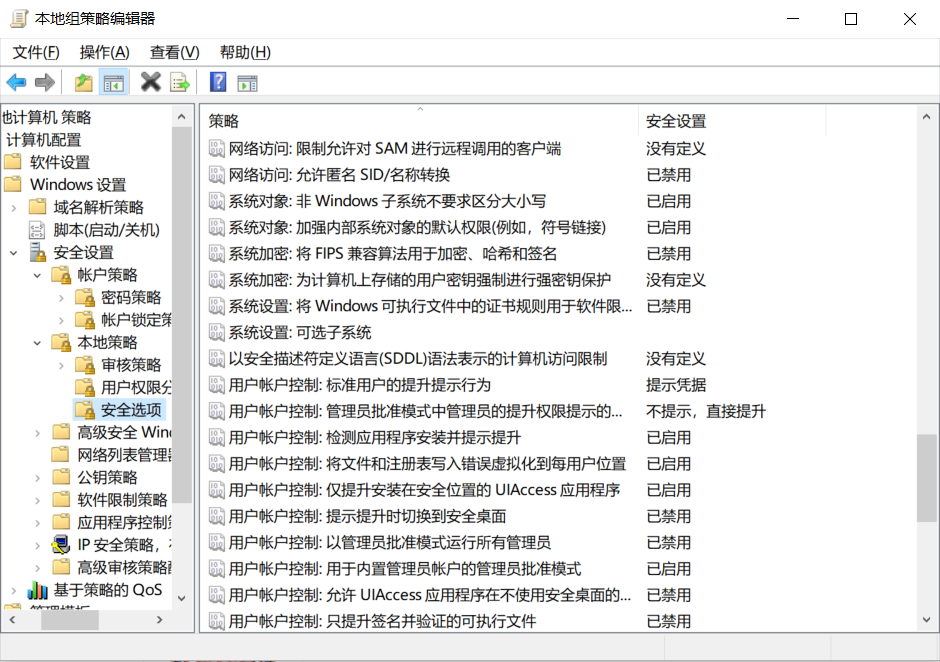

首先由于 Win10 家庭版没有 gpedit.msc (本地策略组编辑器), cmd 以下代码将电脑模拟为 专业版
1
2
3
4
5
6
7
8
9
10
11
| @echo off
pushd "%~dp0"
dir /b C:\Windows\servicing\Packages\Microsoft-Windows-GroupPolicy-ClientExtensions-Package~3*.mum >List.txt
dir /b C:\Windows\servicing\Packages\Microsoft-Windows-GroupPolicy-ClientTools-Package~3*.mum >>List.txt
for /f %%i in ('findstr /i . List.txt 2^>nul') do dism /online /norestart /add-package:"C:\Windows\servicing\Packages\%%i"
pause
|
Win + R 打开 gpedit.msc, 将 “以管理员批准模式运行所有管理员”
原因: 电脑本身是管理员用户 但 更上层还有个 更高的管理员
